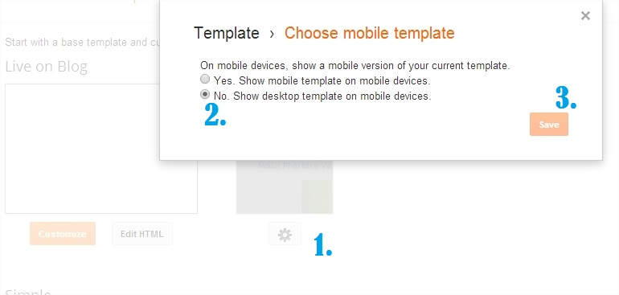
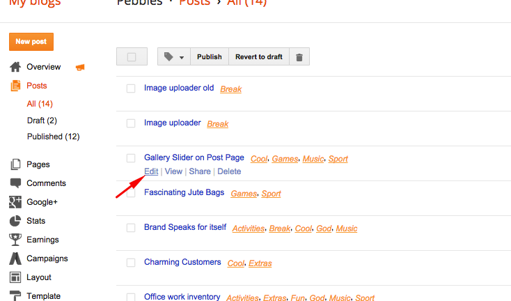
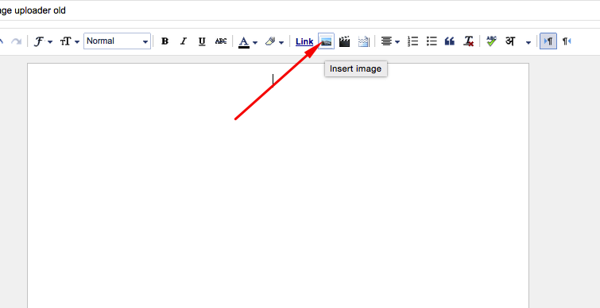
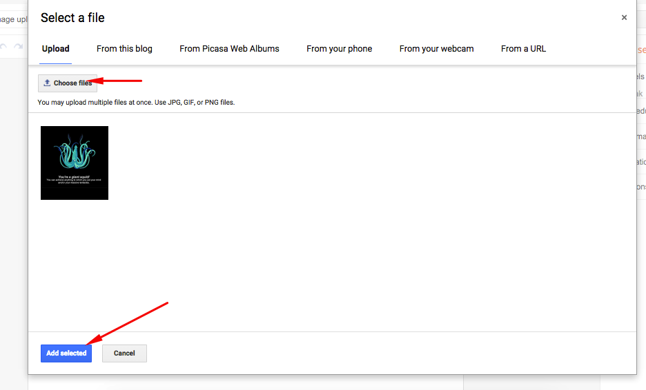
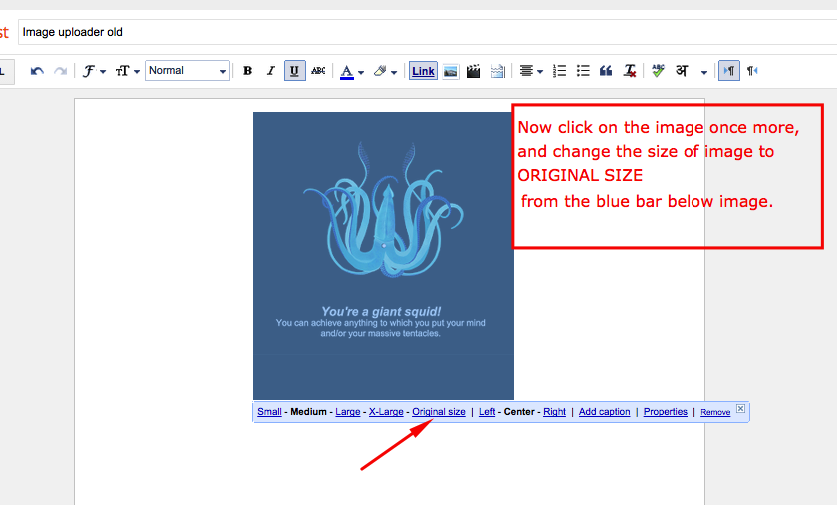
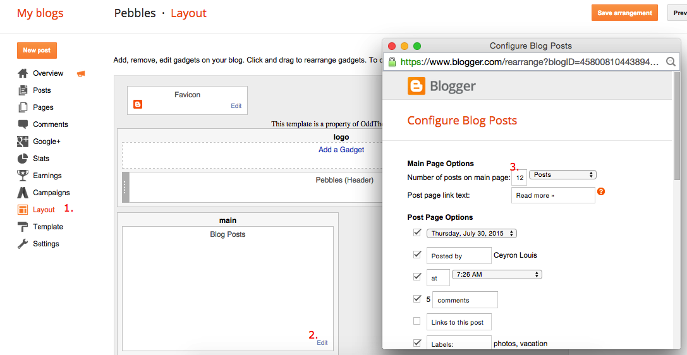

Pebbles Blogger Template” Documentation by “Odd Themes” v1.0

Created: 23/06/2014
By: Odd Themes
Email: oddthemes@gmail.com
Website: www.OddThemes.com
Thank you for purchasing our template. If you have any questions that are beyond the scope of this help file, please feel free to email via our user page contact form here. Thanks so much!
Table of Contents
- Installation
- Add Social Links on Left sidebar
- Upload Logo
- Setting up the menu in sidebar
- How to upload posts images [MUST SEE]
- Set number of posts on homepage
- Credits To
- Installation - top
- Add Social Links on Left Sidebar - top
- Upload Logo- top
- Setting up the menu in sidebar - top
- On Blogger Dashbord Click Template
- Click Edit HTML
- Scroll down and Find this Code :
<div id='main-menu'> <ul class='menu' id='menu-main-menu'> <li><drop>Galleries</drop> <ul> <li><a>Personal</a></li> <li><a>Fashion</a></li> <li><a>Outfit</a></li> </ul> </li> <li><a href='#'>Blog</a></li> <li><drop>Portfolio</drop> <ul> <li><a>Gallery</a></li> <li><a>Joy</a></li> <li><a>Makeup</a></li> </ul> </li> <li><a href='#'>About</a></li> <li><a href='#'>Journal</a></li> <li><a href='#'>Features</a></li> <li><drop>Personal</drop> <ul> <li><a>Blog</a></li> <li><a>Portrait</a></li> <li><a>Hobbies</a></li> </ul> </li> <li><a href='#'>Studio</a></li> <li><a href='#'>Contact</a></li> <li><a href='#'>The Shop</a></li> </ul> </div> - Change # with yours URL link and text with your text. If you want dropdown menu then
- How to upload posts images [MUST SEE] - top
- Set number of posts on Homepage - top
You Follow These Steps To Upload Your Blogger Template To Blogger Platform. First Login to your Blogger DashBoard by Using Your Google Username And Password.
Then follow these steps:
1. On Blogger Dashboard Click Template.
2. Click on Customize Mobile Template on right side, now check the radio button for NO.
3. Click Backup/Restore button (Top Right).
4. Click on Choose File ( Browse..) button. Find the “template.xml” file location.
5. Then Click Upload.


You Can See that the Header area have Social Icons Collection. To place your URL's in Social Icons in this theme you can follow these steps:
1. On Blogger Dashbord Click Template
2. Click Edit HTML
3. Scroll down and Find this Code :
<div id='social-menu'> <a href='https://www.facebook.com/oddthemes' target='_blank'><i class='fa fa-facebook'/></a> <a href='https://plus.google.com/+Oddthemes' target='_blank'><i class='fa fa-google-plus'/></a> <a href='#' target='_blank'><i class='fa fa-instagram'/></a> <a href='#' target='_blank'><i class='fa fa-pinterest'/></a> <a href='https://twitter.com/oddthemes' target='_blank'><i class='fa fa-twitter'/></a> <a href='#' target='_blank'><i class='fa fa-linkedin'/></a> </div> <!-- #social-menu -->
4. Change yours Social URL links
Access your blog Layout > click Edit link on Header widget

To Edit Menu in this theme you can follow these steps:
You Follow These Steps To Upload IMAGES to Your Blog.
1. On Blogger Dashboard, click on edit posts or make a new post.

2. Click on Insert image from the top button and upload and Add the image to the post.


3. Click the image so that it will get selected and blue bar appears.
4. Now Click on ORIGINAL SIZE from Medium selected by default.

5. Then Click Save and publish.
6. DO THIS FOR EVERY IMAGE YOU ADD IN THE POSTS. This template works this way.
You Can Set the number of posts you want to show on homepage. Just follow these steps:
1. On Blogger Dashbord Click Template
2. Click Layout
3. Click on Edit on Blog Post section

4. Change the number of posts you want to show on homepage.
K) Credits To - top
Special credits: God [ For Giving Me Strength ]
Once again, thank you so much for purchasing this theme. As I said at the beginning, I'd be glad to help you if you have any questions relating to this theme. No guarantees, but I'll do my best to assist.
Ceyron Louis At OddThemes.com